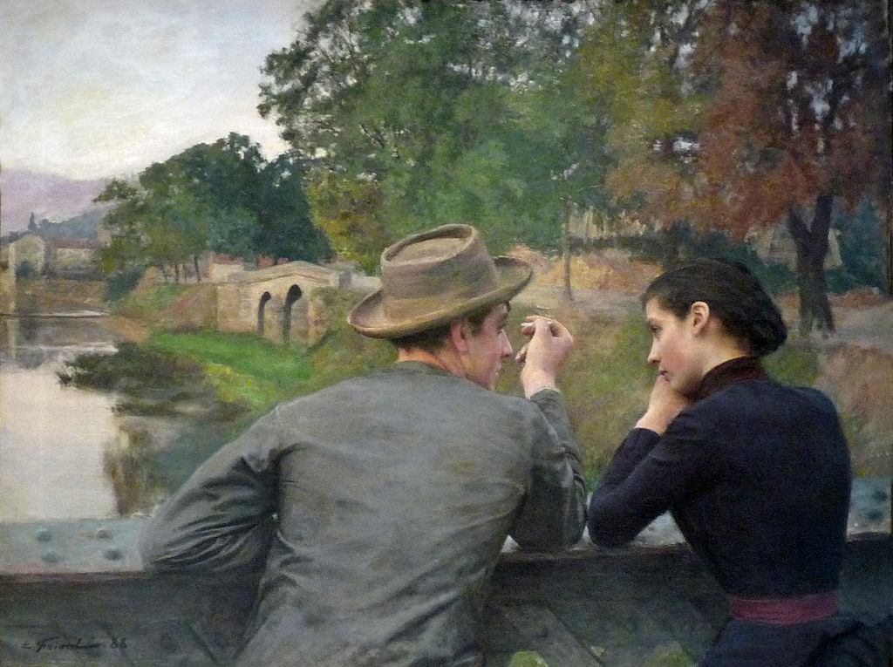
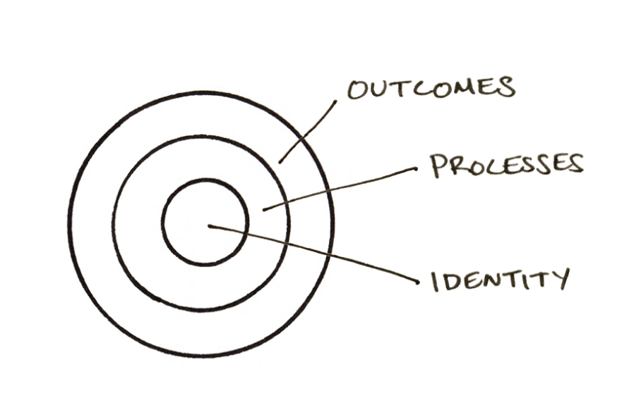
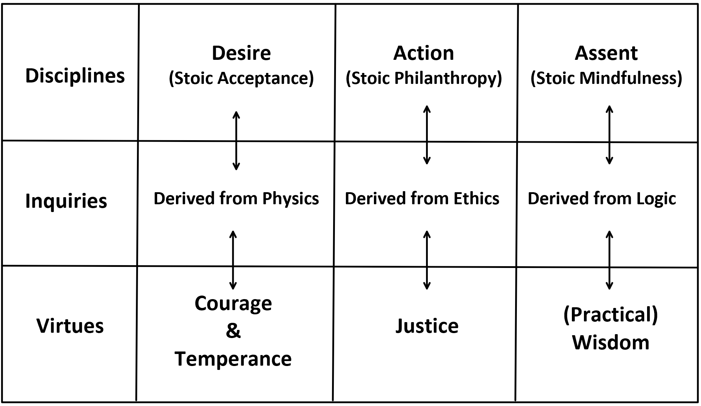
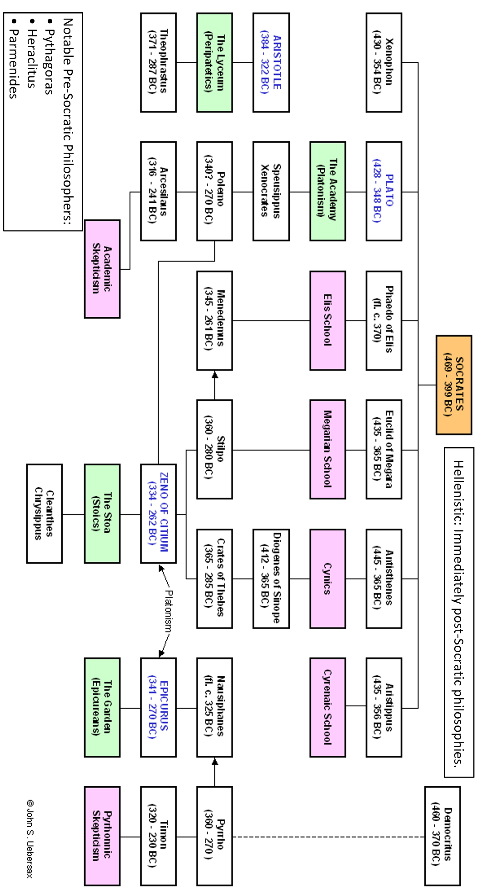
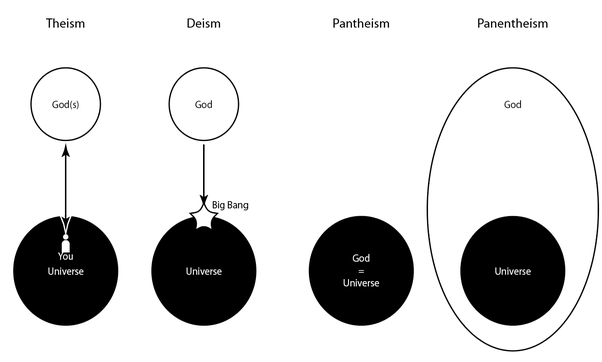
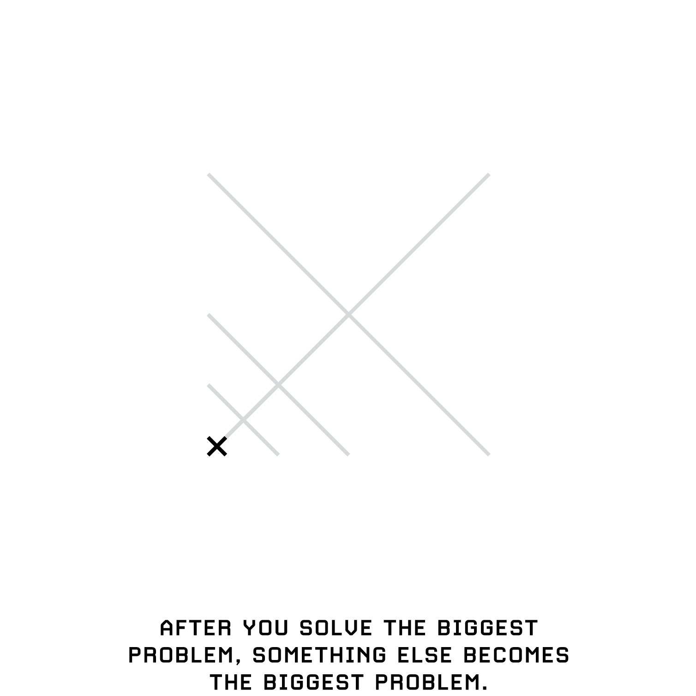
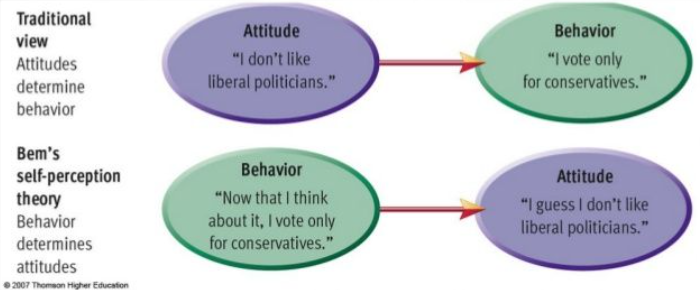
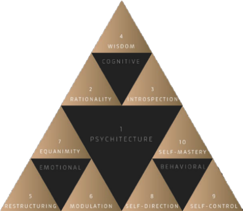

Introduction
“God, grant me the serenity to accept the things I cannot change,
Courage to change the things I can,
And wisdom to know the difference.”
~ Reinhold Niebuhr, Serenity Prayer, 1934
The purpose of studying philosophy isn’t to imitate how the ancients lived, but to understand how they thought. And what’s there to learn from their way of thinking? They believed the highest aim is to be a good human being and that is the essence of this introduction; the rest is commentary. What does being good look like? It means doing whatever you’re doing with full presence. It means that reputation is irrelevant and doing what’s right is what counts. Cleanthes, a Stoic philosopher and the successor to Zeno, embodied these values through his discipline, humility, and poetic insight. He taught that true wisdom lies in living in harmony with nature and reason. According to Cleanthes:
If you ask what is the nature of good, listen:
That which is regular, just, holy, pious,
Self-governing, useful, fair, fitting,
Grave, independent, always beneficial,
That feels no fear or grief, profitable, painless,
Helpful, pleasant, safe, friendly,
Held in esteem, agreeing with itself: honorable,
Humble, careful, meek, zealous,
Perennial, blameless, ever-during
We gain knowledge through reflecting on our experiences, not just by having them. Only with reflection of experience can come understanding. Socrates believed that living a meaningful life requires constant self-reflection and questioning, which he summed up in the phrase, “an unexamined life is not worth living.” He also emphasized the ancient Delphic maxim, “know thyself,” urging people to understand their own thoughts, values, and motives. Without self-knowledge, we risk living without understanding, purpose, or growth. We risk living blindly, driven by habit or external influence rather than reason. For Socrates, true wisdom begins with recognizing our own ignorance and striving to live a thoughtful, examined life. Without thinking about our actions, beliefs, and goals, we’re not much different from animals, who act on instinct without deeper awareness. Without engaging in the unique abilities that make us human, like introspection and conscious thought, we risk losing a vital capacity—one that allows us to create meaning and live fully as human beings.
The more wisdom one has, the greater the grief; the more knowledge one gains, the more sorrow it brings. Wisdom is a virtue, and with it comes the responsibility of bearing the burdens that our knowledge brings. If you coddle yourself and allow yourself to be corrupted by pleasure, nothing will seem bearable. Not because things are hard but because you are soft. Ensure you never get too comfortable because you will forget how to rely on your own instincts since you have been led to nourishment. The person who swims against the current of the stream truly understands its force. In certain situations, skill can surpass sheer strength. Philosophy, much like the techniques in jiu-jitsu, must become second nature and instinctive: When you hesitate or overthink, you fall behind; relying on strength to compensate for that hesitation only leads to exhaustion, and exhaustion ultimately results in failure.
The adjective, stoic, is an unemotional endurance of pain. Seemingly enough, Epictetus once compared the philosopher’s lecture room to a hospital, from which the student should walk out in a little bit of pain. All the while, Stoicism, the noun, is not just a philosophy but a dynamic and far-reaching way of life, embraced by individuals who experienced love, grief, struggle, and courage in the midst of history’s greatest challenges. It was lived by those who raised families, wrote influential works, stood strong in their beliefs, and led meaningful lives. The philosopher is essentially a scientist in spirit, but without the laboratory to conduct experiments. The goal of the philosopher is to live a life according to Nature. Do we have dominant control over our cognition? I believe not. Evidently, we must remain actualized to thwart cognitive errs by admitting our mistakes and acknowledging our limitations. Pros are just amateurs who know how to gracefully recover from their mistakes. After all, pros are pros only because they’ve committed many more mistakes and recovered from them. Be apt and aware to delineate our ignorance. Embracing Stoic philosophy requires much practice, and you must be ready to commit. After all, nothing worthwhile comes to those who aren’t willing. What purpose will you choose in life? When we are captivated by a clear purpose, we are less likely to be distracted by comparisons. Don’t be like a lifeless fish, merely drifting with the current; instead, it’s vital to have direction and purpose, knowing where you’re headed and why.
Three Parts of Purpose
According to Clayton Christensen:
- A likeness: The destination
- A deep commitment: Almost like a conversion to the likeness trying to be created
- Metrics for measurement: Essential for calibration, progress, and coherence
Life becomes unbearable not because of circumstances, but because of a lack of meaning and purpose. Purpose must be deliberately conceived and chosen, and then pursued. The how is an emergent property. In the Nichomachean ethics, Aristotle identified rational contemplation as the highest purpose of human life, because our unique function in the animal world is our ability to think. For a detailed guide on how a serious thinker should organize their thought process, read The Intellectual Life by Antonin-Gilbert Sertillanges. It offers timeless, practical advice on cultivating focus, discipline, and clarity in one’s intellectual work.
Stoics shifted from Aristotle to say that the point of life for humans is to use reason to build the best society that is humanly possible to build. How does this Stoic view conflict with natural selection where the only two things that matter are survival and the ability to reproduce? The Stoics would argue that life’s true fulfillment lies not just in survival, but in cultivating wisdom and virtue for the greater good. Even if reason evolved for survival, once we have it, we can choose to aim higher than mere survival.
In present times, we are too concerned with information consumption instead of information processing insofar as that we can no longer metabolize experience. Because of outsourcing processes, tribal Sophism has been seen to triumph over Socratic grappling. This pedagogy is particularly striking in higher education where students are taught what to think and not how to think. People like us do stuff like this is the rallying cry of tribalism. Beware of the linguistic tricks embedded in conversations involving an implicit hierarchy. We change people through genuine, authentic conversation, not by chastising, isolating, or censoring them. We must address the heart of why they feel the way they do. Stop hoping for a completion of anything in life. That one day will never come. Instead, seize that day one. Use Epictetus’s formula for successful personal change—self-scrutiny mixed with self-kindness. Too much scrutiny you’ll never be at peace. Too much kindness, you’ll never move forward. Forgive yourself from time to time and allow yourself the space to make small but powerful improvements in your character.
Three major plagues of modern life are anger, anxiety, and loneliness. But just as diamonds form under pressure while other things crack, or as a glow stick must be cracked to glow, these seemingly negative experiences can lead to transformation and beauty. The kernel must pop to become the savory popcorn we enjoy, and just as hot water softens a carrot but hardens an egg, our challenges can shape us in different ways. It’s important to recognize that even the incidental and imperfect effects of nature’s processes hold their own beauty. Take the baking of bread: the loaf cracks in places, but these imperfections capture our attention and heighten our appetite. Anger, anxiety, and loneliness may be parts of our human nature, but perhaps we simply struggle with how to navigate them.
It just appears that we are terrible at dealing with these plagues of modern life. However, can we truly be blamed, given that there are countless systems and a multitude of ruses that sustain and perpetuate these plagues? Anxiety, for instance, has become one of America’s biggest industries, with the creation, refinement, and distribution of fear about the future as a primary focus. Technological progress, rather than moving us forward, has often provided more efficient ways to retreat backwards into familiar patterns. In response to anxiety, which stems from apprehension about the future, many people turn to drugs as a temporary relief, yet, these are merely superficial bandage solutions, masking the underlying issues that continue to fester beneath the surface.
Picture this: your room is a mess, and you decide to clean it. You put in the effort to tidy up, and for a while, it’s neat. But if you continue the habits that originally made the room messy, it won’t be long before clutter piles up again, and you’ll be relying on another burst of motivation to clean once more. You’re stuck in a cycle, repeatedly chasing the same result because you haven’t addressed the root cause. Instead of fixing the underlying issue, you’ve only dealt with the symptoms.
The underlying issue is the identity you maintain for yourself. Many people in American society now want quick fixes for their sloppy, broken systems while never addressing the root of their problems. They pile on shortcuts, quick fixes, pills, that are not time tested truths. The time tested truths take time and people fail to choose that path time and time again because it takes time; it’s effortful. The purpose of a habit is to remove that action from self-negotiation. You no longer expend energy deciding whether to do it. You just do it. Good habits can range from telling the truth to flossing. Habit is far more dependable than inspiration. Make progress by making habits. Don’t focus on getting into shape. Focus on becoming the kind of person who never misses a workout.
Self-medicating through intoxication may offer a brief escape from reality, but it only exposes the fragility of the mind. Even when people sense their lack of agency, their first impulse is to look outward—to influencers, podcasts, or experts—for direction. Yet the wisdom we seek already resides within us. Deep down we know what is right and what must be done, though we have buried our instincts beneath layers of noise and distraction. The internet functions much the same way: a temporary opiate. Its constant pull dulls us, and when disturbed, we reach for the numbing distractions it provides. But while it may offer an alternative, it is not a solution. Lou Marinoff underscores this in his book Plato, Not Prozac!, reminding us that philosophy can be a more enduring remedy, because, unlike mere externalization—where we act correctly only to conform—internalization leads to private acceptance, so our choices, reactions, and interactions genuinely reflect the long-lasting and deeply personal principles we have truly adopted. Practiced rightly, Stoicism can quiet the mind’s unrest—not by erasing emotion, but by regulating it. Anger, anxiety, loneliness, and depression are among the threads woven through modern life, but they need not dictate it.

Émile Friant, Les Amoureux, 1888. Oil on canvas.
What makes someone depressed?
Depressed people are acutely self-aware—perhaps too much so—and tend to view themselves through an excessively negative lens. They berate themselves for minor lapses from their idealized standards, chastising themselves for not being perfect, even in a world they know is rife with flaws and wasted human potential. Depression often involves fixating on past failures, ruminating endlessly on what has gone wrong, and sometimes drawing a perverse sense of certainty or identity from those failures. This mindset is almost always counterproductive in the present, fostering mistakes that reinforce the very cycle of despair. One failure stacks upon another, each compounding the hunger for a satisfaction that remains perpetually out of reach.
In contemporary times, I’ve noticed a trend where depression is now being romanticized along with the major plagues of anger, anxiety, and loneliness!? A person can become so used to thinking about their own flaws that they start to see them as endearing little personal traits. For example, people inexcusably laud their quirky personality traits. Personally, I view this as bearing resemblance to Stockholm syndrome. You are a prisoner to your squalor, so you revel in its company. The traction for this contemptible perspective is egregiously pitiful! People should become more aware as to not praise their plagues. Sure, there may be some feelings of empowerment to announce that you have anxiety and depression, but this does absolutely nothing to extinguish the underlying issues. The things that kill confidence include: social inhibition, negative thinking, overthinking and doubting past actions, caring too much about what other people think, and focusing on your insecurities instead of strengths.
- If you are depressed, you are living in the past.
- If you are anxious, you are living in the future.
- If you are at peace, you are living in the present.
You can fail, yet not become a failure, for failure is relative. The true enemy lies in our failure to see the hidden opportunities for growth within challenges. Telic thinking fuels anxiety. Most of the overthinking, anxiety, and worry that we have about stuff is when we’re too fixated on the outcome. When we shift our focus to the process or the journey, everything becomes more enjoyable because we’re fully immersed in the present moment. We’re also less anxious about the outcome because it no longer takes precedence. Instead, we care about the process itself. When you’re giving your best effort, there’s no room to fear failure. But remember, when standing out, don’t strive to be the best—strive to be the only.
What value is there in fame or achievement when compared to character? True worth lies within, not in outward displays. If you’ve trained yourself to live simply, don’t boast about it. If you only drink water, there’s no need to make it a spectacle. Should you pursue endurance or discipline, let it be for your own growth, not for public approval. The joy you gain from the process far outweighs any fleeting pride in the results. As for criticism, the only sure way to avoid it is to do nothing, say nothing, and ultimately, be nothing.
Criticism is loud. Respect is quiet.
Shallow rivers are noisy. Deep lakes are silent.
What some consider health, if achieved through constant worry over every meal, is hardly better than a tiresome illness. How is it that you would sooner work on your body while neglecting your soul in the process? Enduring grueling training can feel unbearable, but perseverance pays off. Endure the pain now, and the rewards can last a lifetime. Yet reaching the top changes everything. On the ascent, there is little to lose and everything to gain; at the summit, looking down, the challenge shifts—it is no longer about moving forward, but about holding one’s ground and avoiding the fall.
There is no such thing as pleasure—only relief from pain. You must endure suffering to be on top. Living means enduring suffering, but survival lies in discovering purpose within that suffering. Consider the sword of Damocles: an allusion to the imminent and ever-present peril faced by those in positions of power. Other-ize. Practice oikeiôsis—the habit of relating yourself to others to maintain humility and avoid an inflated ego, for ego is the enemy. View life from the perspective of eternity. That’s the problem with many people isn’t it? If we just looked at things from a broader perspective, then all these petty differences might pale into insignificance. Put problems in the context of broader humanity to realize they are not specially tailored to your own life as once conceived. We approach compassion with this practice.
Richard Westall, The Sword of Damocles, 1812. Oil on canvas.
According to the legend, when Damocles spoke in extravagant terms of his sovereign’s happiness, Dionysius invited him to a sumptuous banquet and seated him beneath a naked sword that was suspended from the ceiling by a single thread. Thus did the king demonstrate that the fortunes of men who hold power are as precarious as the predicament in which he had placed his guest.
You do not understand the struggle of others until you experience the struggle yourself. You will discover that where they stand depends on where they sit. When the tide goes out, you see who’s not wearing shorts. You are what you do. Not what you say, not what you believe, not how you vote, but what you spend your time on. The more you sacrifice, the more your relief. Sacrifice deepens commitment and it’s important to ensure that what we sacrifice for is worthy of that commitment.
Optimizing life around low pain thresholds leads to subpar preparation and this is why enduring the struggle is the key to lasting influence. Dopamine gained without effort can ruin a person—this is the trap of drugs. Be cautious of any reward that comes without sacrifice, as it undermines true fulfillment. Think about how the quick, distracting TikTok dopamine hits are incrementally destroying you. Addictions have a payoff, compulsions do not. Addiction is a progressive narrowing of the things that bring you pleasure. Happiness is a progressive expansion of the things that bring you pleasure. The former emerges passively. The latter takes work. There is no limit on better. Talent is distributed unfairly, but there is no limit on how much we can improve what we start with. Time is like a drug—essential in small doses, but too much of it will ultimately take your life.
People want to run sprints instead of marathons. Run your own race at your own pace.
We’re only ever really in competition with ourselves if you think about it. Having anxieties, self-doubts, or misguided lessons from the past doesn’t define a person’s potential. With courage and the guidance of the right mentors, anyone can rise above their challenges and achieve greatness. It’s never too late to become the person you were always meant to be. Age doesn’t matter; an open mind does. Minds are like parachutes; they only function when open. Stop complaining about that which you cannot control. Strong minds endure hardship silently, while weak minds complain even in the absence of pain. Begin your steps towards cultivating a world that you would want to live in. You may not be able to change the world on your own, but you can cast a stone into the water and watch it create ripples that spread far and wide. In the long run, it’s the optimists who shape the future. Being an optimist doesn’t mean ignoring the many problems we face, but rather believing in our ability to improve and overcome them.
While some may argue for the right to embrace insanity, I believe it is everyone’s right to experience sanity and share a common reality, regardless of the cause of their mental illness or trauma. That common reality exists on a single plane of ‘what is.’ Stoicism is the philosophical root of several evidence-based cognitive behavioral therapies like Viktor Frankl’s Logo-therapy (existential analysis) and Albert Ellis’s Rational Emotive Behavioral Therapy (REBT). REBT posits three core demands fueling cognitive distortions and underlying emotional disturbance:
- “Because I strongly prefer to, I absolutely must do well in life and get the approval of significant others or else I’m no good.”
- “Because I keenly desire it, others must treat me well or else they’re no good.”
- “Because I passionately wish it, life absolutely must go well or else it’s no good.”
These demands create anxiety, depression, guilt, anger, resentment, procrastination, and addictions. They are not only about the future, they are also about control. Regardless, we must continue with unconditional acceptance for ourselves. Focus on the effort of the philosophy—not the results of it. Ironically, the closer we focus on results, the farther they elude. The following bullets are from Irresistible by Adam Alter:
- [Atelic activities] Harmonious passions (intrinsically motivating/fulfilling/enjoying): Harmonious passions are very healthy activities that people choose to do without strings attached—the model train set that an elderly man has been working on since his youth, or the series of abstract paintings that a middle-aged woman creates in her free time. “Individuals are not compelled to do the activity,” the researchers said, “but rather they freely choose to do so. With this type of passion, the activity occupies a significant but not overwhelming space in the person’s identity and is in harmony with other aspects of the person’s life.”
- [Telic activities] Obsessive passions (transformation from something to enjoy to something to get done): Obsessive passions, however, are unhealthy and sometimes dangerous. Driven by a need that goes beyond simple enjoyment, they’re likely to produce behavioral addictions. As the researchers defined it, the individual “cannot help but to engage in the passionate activity. The passion must run its course as it controls the person. Because activity engagement is out of the person’s control, it eventually takes disproportionate space in the person’s identity and causes conflict with other activities in the person’s life.” This is the video game that a teenager plays all night instead of sleeping and doing his homework. Or the runner who once ran for fun, but now feels compelled to run at least six miles a day at a certain pace, even as debilitating stress injuries set in. Until she’s on her back, unable to walk, she’ll continue to run daily because her identity and well-being are intimately bound with her as yet unbroken streak.
- Harmonious passions “make life worth living,” but an obsessive passion plagues the mind. Obsessions are thoughts that a person cannot stop having, and compulsions are behaviors a person cannot stop enacting. There’s a key difference between addictions, and obsessions and compulsions. Addictions bring the promise of immediate reward, or positive reinforcement. In contrast, obsessions and compulsions are intensely unpleasant to not pursue. They promise relief—also known as negative reinforcement—but not the appealing rewards of a consummated addiction.

Identity is about what you believe. Processes are about what you do. Outcomes are about what you get. Fall in love with becoming the identity of who does the work, not just with dreaming about the results you want.
When jarred, unavoidably, by circumstance, revert at once to yourself, and don’t lose rhythm more than you can help. You’ll have a better grasp of harmony if you keep on going back to it. Have enthusiasm for consistency, for it is the most important thing but to create that consistency you have to change or create habits. Remember that consistency cannot be rushed in the short term; it is cultivated over the long term through small, deliberate habits. Haste is the enemy of consistency. Build habits, not miracles. Haste makes those rich in a day but hanged in a year. Seeking quick wealth often leads to downfall. The cost of impatience is personal, financial, or moral ruin. True success requires patience and long-term commitment. Building something lasting takes time and effort, but it’s important to remember that it can all be washed away in a moment.
Rome wasn’t built in a day… but it burned in one.
Stoic Atlas

This table traces how intentional practices and reflective exercises support the growth of moral excellence. If you’re feeling lost, start with gratitude as it will unlock all other virtues.
- Courage (andreia): Doing the right things, both physically and morally, under all circumstances. Incurring difficult full costs over easier marginal costs without any attentional residue afterwards. Even more powerful than fate is the courage that bears it steadfastly. Bravery is the knowledge of what is terrible and what isn’t and what is neither. This included perseverance, intrepidness, greatheartedness, stoutheartedness, and industriousness which was one of Arius of Didymus’s most favored virtuous qualities that he illustrated well in his own life. Courage is the ability to remain composed and dignified even in the face of adversity. It’s grace under pressure. You can practice any virtue erratically but nothing consistently without courage.
- Justice (dikaiosune): Treating every human being—regardless of his or her stature in life—with fairness and kindness. The knowledge of apportioning each person in situation what is due, equity. Under this banner Stoics placed piety, kindness, good fellowship, and fair dealing.
- Wisdom (phronesis): Navigating complex situations in the best available fashion. This is the distilled essence of knowledge; knowing when to grit or quit; knowing the long-term consequences of your actions. Wisdom applied to external problems is judgment. Wisdom is the knowledge of what things must be done and must not be done and what is neither, or appropriate acts. Wisdom is not only speaking the truth but also aligning your actions with its essence. Wisdom is the discarding of vices and the return to virtue, by way of knowledge. Within wisdom, we’ll find virtuous qualities like soundness of judgment, circumspection, shrewdness, sensibleness, soundness of aim, and ingenuity.
- Temperance (sophrosune): Exercising moderation and self-control in all spheres of life. The knowledge of what things are worth choosing and what are worth avoiding and what is neither. Contained within this virtue are things like orderliness, propriety, modesty, and self-mastery.

The Western traditions before Christianity. Note: John Stuart Mill’s modern utilitarian ethics echo Epicurean thought.
Stoicism couples both religious believers and unbelievers due to the common understanding of ethics. Many Stoics believed in logos (word of God) which is the rational observation of the universe and Providence which is a general plan of the cosmos.

- Pantheistic: Identifies the universe or nature as divine, with God being immanent within it, but typically without a personal deity. It doesn’t necessarily imply God is absent but rather that God’s presence is inherent within nature.
- Panentheistic: Similar to pantheism but is a more meta view where God is pantheistic yet transcends and pervades the universe as well while also being immanent within it. Distinctly in and from beyond the universe.
Stoicism takes a naturalistic account for explaining ethics. Some of the meta-ethical positions include skepticism, rationalism, empiricism, and intuitionism. Some of the classical branches of philosophy are ethics, aesthetics, epistemology, logic, and metaphysics.
Not having goals is not an option. No matter what, you will always be teleologically measuring against an outcome — not having goals is itself a goal. In teleology, Aristotle had made the distinction between telic and atelic activities. Telic activities serve some instrumental means to an end which can seduce us onto the hedonic treadmill. In contrast, atelic activities are in-and-of themselves. They are performed for their own sake and not in order to achieve a particular end. For instance, you do hobbies because you like it. The activity is its own reward. You are not aiming for expertise; you are aiming for fulfillment. With so much access to knowledge and susceptibility to compare against others, we are mistaken to get caught up in telic activities. To be happy, an atelic perspective is the goal.

Hedonic treadmill: as new challenges arise or other problems come to the forefront, individuals may find themselves back at a similar level of satisfaction as before. This cycle can perpetuate the pursuit of solutions to new problems without leading to a sustained sense of fulfillment.
- The happy man is he who knows how to enjoy the benefits of nature: in other words, he who thinks for himself, is thankful for the good he possesses, does not envy the welfare of others, and does not sigh after imaginary benefits always beyond his grasp.
- The unhappy man is he who is incapable of enjoying the benefits of nature; that is, he who allows others to think for him, neglects the true good he possesses in a fruitless search for imaginary benefits, and vainly sighs after that which always eludes his pursuit.
Acquiring things will rarely bring you deep satisfaction. But acquiring experiences will. For every dollar you spend purchasing something substantial, expect to pay a dollar in repairs, maintenance, or disposal by the end of its life. Buy things that make you healthier, wealthier, or provide you free time. It’s called practical materialism: Products that make a material difference in the quality of your life. Use the 1% Rule to curb impulse buys. If the item is over 1% of your annual gross income, wait 3 days. If you still want the item after 3 days, get it. You’ll often realize you don’t actually want/need that thing. If you purchase one item, then donate, toss, or sell another. Minimalism is a dual discipline: Manage both inbound and outbound possessions to enjoy equilibrium.
Epictetus had said: Wherever I go, I will be fine, because I was already fine here—not on account of the place but as a result of my principles, and I am going to take them with me. Be a person of steadfast principles, the first of which is to remain flexible at all times. Anything too stiff, snaps. What are your principles? It’s not a principle unless it costs you money, so costly speech means only the wealthy speak freely. Power compels; money persuades. The less money you need, the less dependent you are. Anything you can settle with money is cheap. Money makes the world go around, but don’t let it make you dizzy. Today, people know the price of everything but fail to understand the value of anything.
If not me, then who? If not now, then when?
Observe what you are doing over what you are saying or telling yourself. When internal cues are weak, ambiguous, or uninterpretable, we infer our attitudes, emotions, or other internal states partially from our behaviors and/or the circumstances in which these behaviors occur.

Bem’s self-perception theory
Words are empty without associated acts. It is difficult for an empty bag to stand upright. When people say one thing, but do the other thing, they are spewing hypocrisy and should not be readily trusted. The trust equation by Steven Drozdeck and Lyn Fisher is as follows:
Trust = (Credibility + Reliability + Authenticity) / (Perception of Self Interest)
Observe acts, for behavior brings meaning to one’s words. Any person of any stature is capable of speaking words, yet few people have the integrity to align words with acts. Integrity is the firm adherence to a code of especially moral or artistic values. Similarly, incorruptibility is an unimpaired condition: soundness; the quality or state of being complete or undivided: completeness. There is a dynamic interplay between words and behaviors: behaviors describe words, but words also describe behaviors. Regardless, if such a discontinuity exists in that dynamic, concern should arise. Forget everything but action. Don’t talk about it, be about it.
Belief + Desire + Temperament = Action
- Belief: Something believed; an opinion or conviction.
- Desire: To wish or long for; crave; want.
- Temperament: The combination of mental, physical, and emotional traits of a person; natural predisposition.
- Action: The process or state of acting or of being active. One can only will their assent; impediments to one’s assent will not provide liberty.
In any discipline, there are those who do the thing and those who talk about doing the thing. This highlights the danger of getting caught up in the metagame: in the startup world, some individuals sell books, speak at conferences, and offer advice to founders, yet have little direct experience founding a company. They resemble the entrepreneurship professor who has never run a business—what might be called metapreneurs.
Don’t explain your philosophy—embody it. Reject hypocrisy wherever you find it. To speak of humility is often to reveal its absence, and excessive humility can easily be mistaken for ignorance. Initially, heed acts before words. If a person claims to be a good person, such a claim is empty—good deeds will claim that person to be a good person, not their good words. You are a man, and your eyes will reveal this. However, whether you are good or bad, he could only discern if he possessed the ability to distinguish the good from the bad. If he lacks that skill, he will never know, even if I were to show him a thousand examples. Speak little, speak well, and act much. Live among others as though God is watching, and speak to God as though others are listening. He who kneels before God can stand before any man.
Make valuable use of time by pausing to reflect. Restructure your mental circuits for the better, and explore the concept of ‘Psychitecture’ by Ryan Bush for deeper insight. According to Zeno, we should arrive at a place where everything we do is in harmonious accord with each man’s guiding spirit and the will of the one who governs the universe. In order to live a virtuous life, Arius Didymus said to achieve disposition of the soul in harmony with itself concerning one’s whole life. Heed Heraclitus’s perspective that perennial change will give way to magnanimity. But also take note to not vary inordinately. The greatest dangers in life come from those who seek to change everything—or nothing at all.
Rembrandt, The Stoning of Saint Stephen, 1625. Oil on canvas.
Be willing to accept that doing the right thing could cost a person everything.
Upholding virtues mitigates life’s costs. Embrace courage, justice, wisdom, and temperance, or risk falling prey to senseless naïveté. Categorical imperatives are objective truths, in other words, they are virtues. What is the purpose of virtue, if not a life that runs deep and still, like a quiet lake?
Understand what fruitfulness looks like in your life, and continue working at it such that that fruit can actually grow. Over time, you will experience the friction of unproductive processes. Where there is the most friction, simply prune those processes out of your workflow and continue working. Life flows easiest when you are a good person. Everything flows, and nothing stays, guided by logos, the universal reason that harmonizes constant change.
Diversify your identity; increase your human capital through self-investment. Do not be the person who carries around only a hammer in their tool belt looking for nails. What will you do when you encounter a screw because you’ll think everything looks like a nail. Start by buying the absolute cheapest tools you can find. Upgrade the ones you use a lot. If you wind up using some tool for a job, buy the very best you can afford. The greatest investment you can make is in your own growth and development. Prohairesis means choice or decision. This is naturally free because it is up to us. Stoicism believes in free-will, but everything has a designated reason. View not in terms of reluctance as there is a reason for all.
Keep your will in harmony with Nature. Einstein said that Schopenhauer’s saying—“A man can do as he wills, but not will as he wills”—had inspired him since his youth and remained a constant source of comfort and patience in facing life’s hardships, both his own and those of others. This idea suggests that while we can act on our desires, we do not choose those desires themselves, as they are shaped by forces beyond our control. Character is fate. Amor fati: love fate. Fate is kindled to stoke your flame. Do not let setbacks extinguish your flame, let the flame continue. When you want something, all the universe conspires in helping you to achieve it. We are all mortal and cannot escape our destiny. Wish for nothing and avoid nothing. Expect everything and attach nothing. Beware of the alluring vices of compulsions.
Do not be tempted by impetuously inimical people. If you don’t encounter these issues with others in your life, why assume you’re the problem in this relationship? Especially when dealing with people who are jealous, insecure, petty, or who play the victim and engage in identity politics. As the malignant narcissist’s identity is anchored in a grandiose self-image of moral goodness, when they morally falter, they resort to rationalizations, confabulations, and other defense mechanisms to maintain a feeling of moral righteousness, thus bypassing the conscience and escaping feelings of guilt. The problem is that they misplace the locus of the evil. Instead of destroying others, they should be destroying the sickness within themselves. They sacrifice relationships with others to preserve their egotistical self-image of perfection. This too shall pass—or some other translation, perhaps all things must end.
Moderate the ego for it is the enemy. Arrive at ataraxia—tranquility of the mind, freedom from pain and fear, by first tending to apatheia—A state of mind free from emotional disturbance, freedom from all passions. For ataraxia and apatheia, account for:
- Metaphysics (the study of existence, reality, and the nature of being)
- Causes for working (Aristotle’s four causes: material, formal, efficient, and final causes)
- Understanding (epistemology: the study of knowledge, belief, and justification)
Eudaimonia is a flourishing life. It is neither a state of mind, nor the simple experience of joys and pleasures. In contrast to the subjective concept of happiness, Eudaimonia is meant as an objective standard of happiness based on what it means to live a human life well. A eudaimonic life must be understood as:
- The nature of the world (and by extension, one’s place in it)
- The nature of human reasoning (including when it fails, as it often does. Perhaps by feeling instead of reasoning).

Psychitecture by Ryan Bush
Reflect on your day: Admit not sleep into your tender eyelids till you have reckoned up each deed of the day—how have I erred, what done or left undone? So start, and so review your acts, and then for vile deeds chide yourself, for good be glad. Journal reflections or think about them as Marcus Aurelius did with his Meditations. A good man takes pleasure in receiving advice, while the worst men are often the most impatient with guidance. Don’t ever respond to a solicitation or a proposal on the phone. The urgency is a disguise. When you get an invitation to do something in the future, ask yourself: would you accept this if it was scheduled for tomorrow? Not too many promises will pass that immediacy filter. If you decide that everything and everyone could teach you something, then you always learn. When the student is ready, the teacher appears. When the student is truly ready, the teacher will disappear.
This introduction lays the foundation for the philosophical journey ahead, emphasizing the timeless value of Stoic principles, the pursuit of wisdom, and the cultivation of self-awareness. By focusing on the present and committing to meaningful purpose, we unlock the capacity to navigate life’s challenges with equanimity and resilience. Equanimity is maintaining balance amid life’s challenges. It is not the same as emotional impassivity, which is shutting down or ignoring feelings. By staying present and pursuing meaningful purpose, we develop equanimity, allowing us to face difficulties with resilience while remaining fully engaged with our emotions.
Central to this exploration is the concept of prohairesis—our faculty of choice—which directs us toward eudaimonia, the flourishing life rooted in virtue. Begin the Stoic process through minimalism and desensitization. Envy the psychopath: emotions are inevitable, but being emotional is optional. Remember, Stoicism is not about emotional elimination but emotional regulation, guiding us to arrive at ataraxia, the tranquility of the mind, free from pain and fear. This begins with apatheia, a state of mind untroubled by emotional disturbance, allowing us to free ourselves from all passions. As we continue on this path, the cultivation of these virtues will empower us to achieve a life of greater clarity, peace, and purpose.